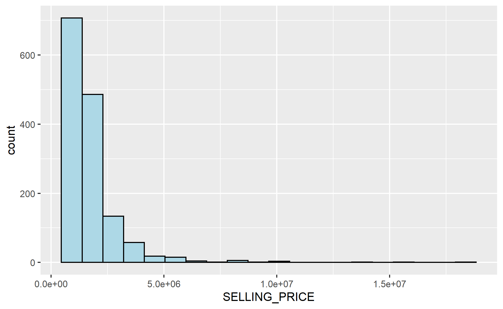
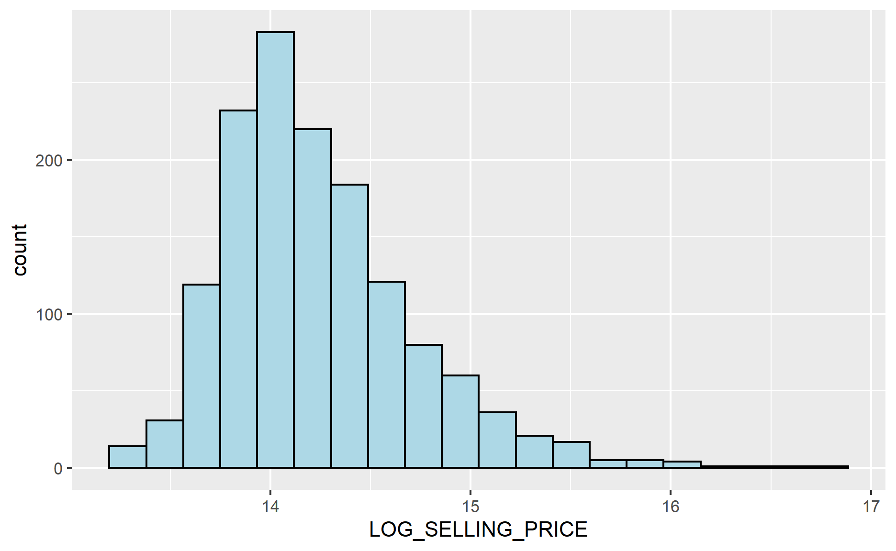
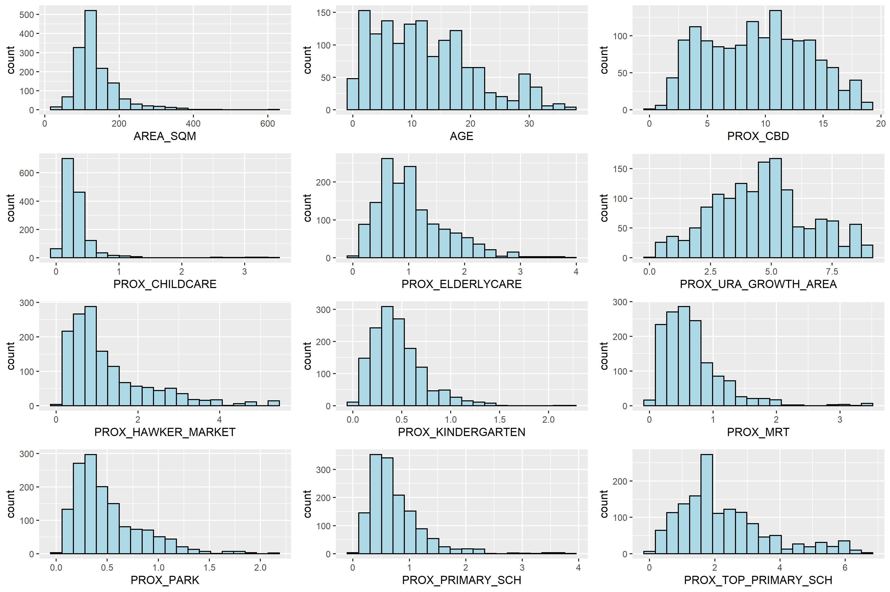
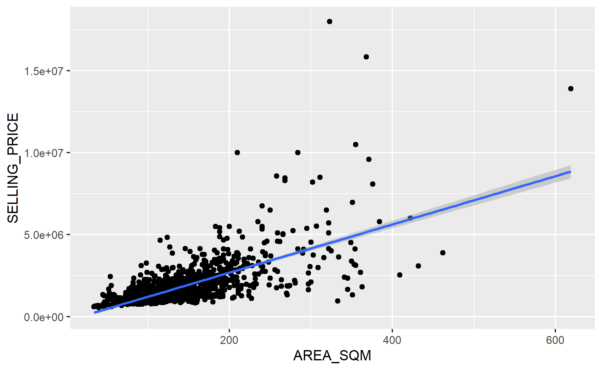
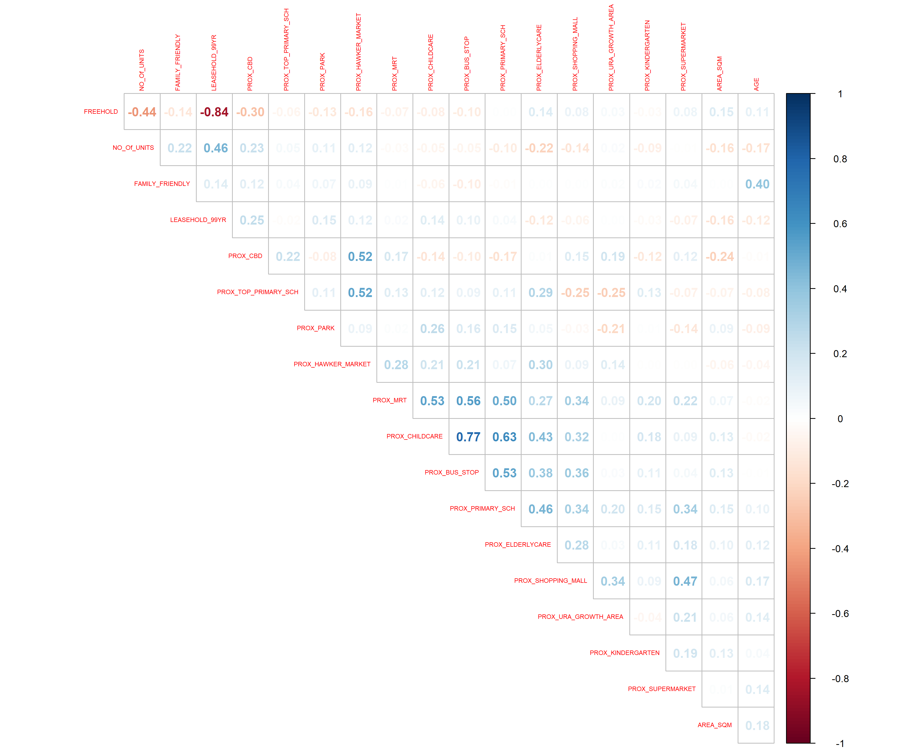
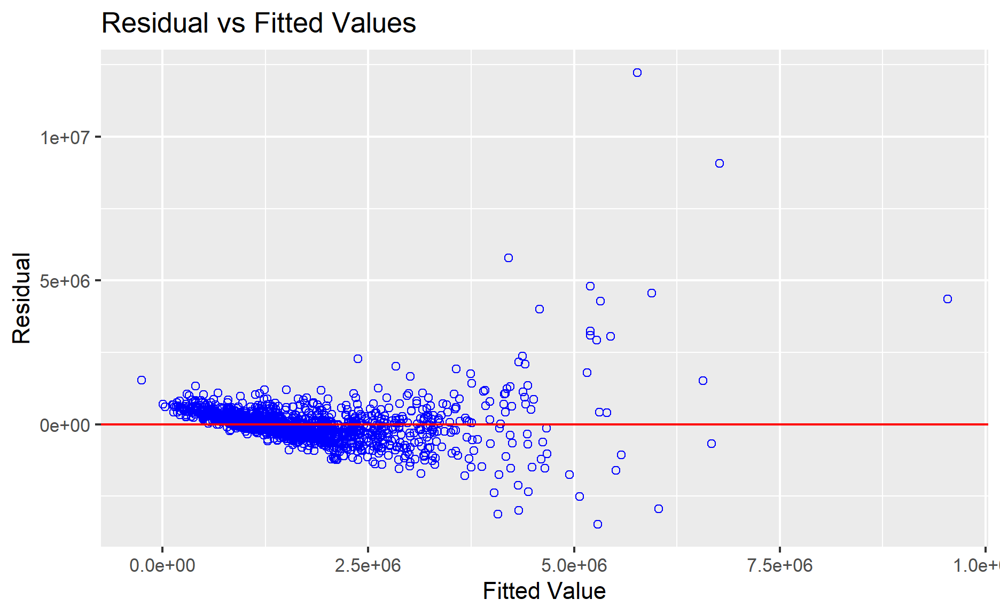
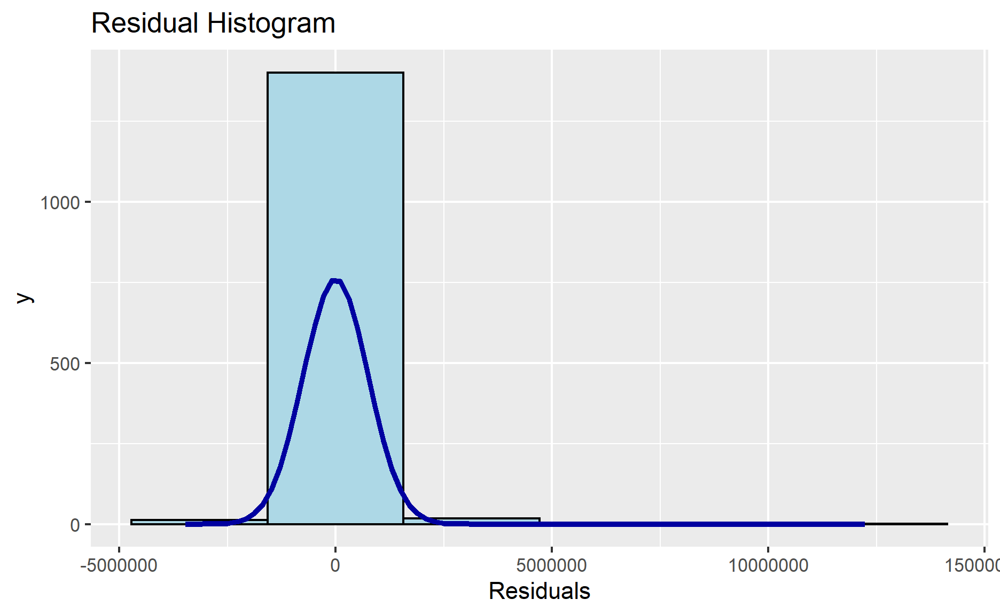
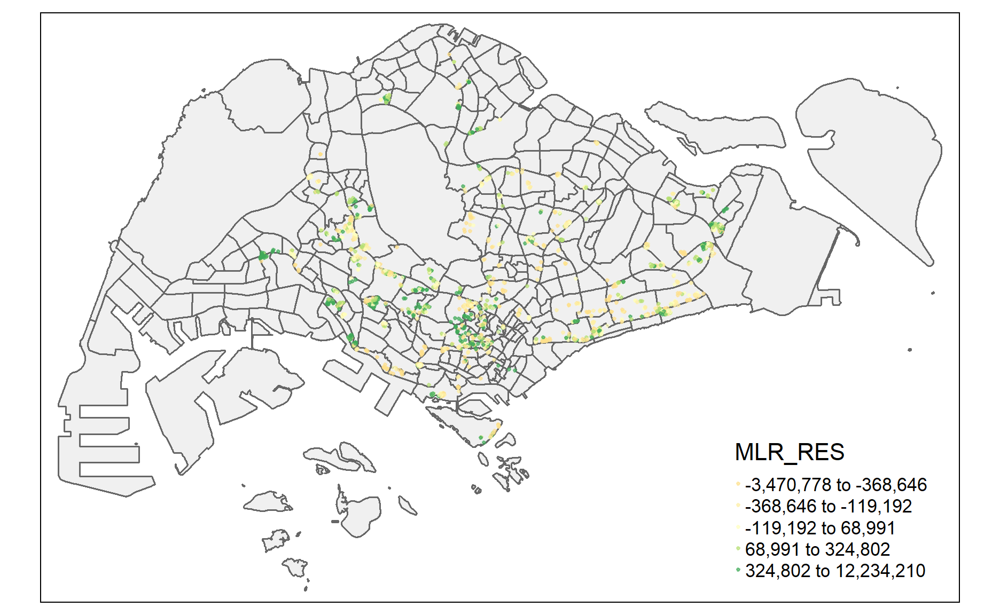
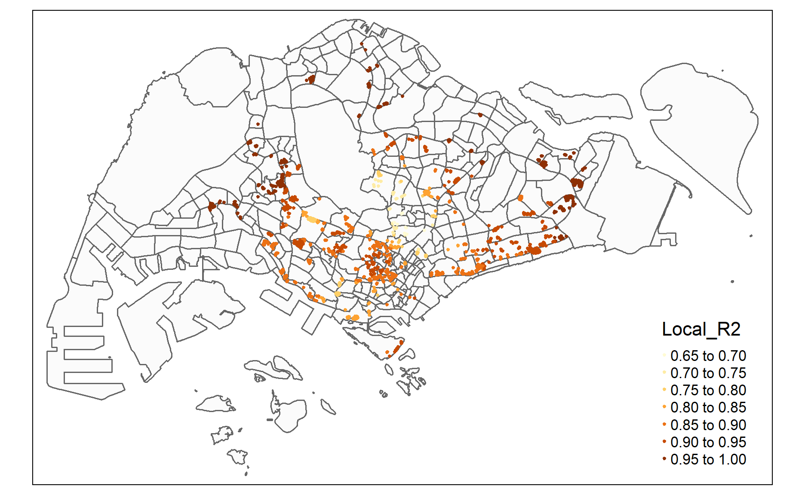
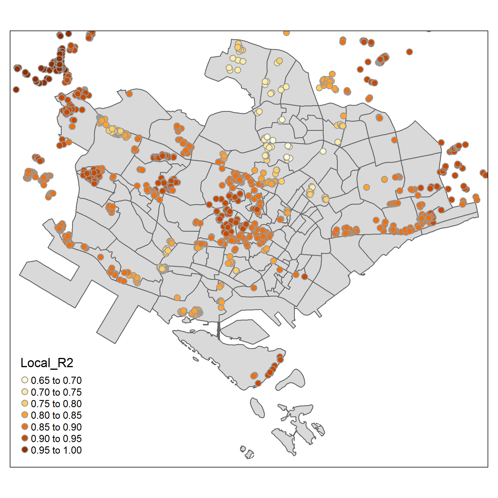

In this hands-on exercise, you will learn how to calibrate geographically weighted regression models by using GWmodel package of R.
Geographically weighted regression (GWR) is a spatial statistical technique that takes non-stationary variables into consideration (e.g., climate; demographic factors; physical environment characteristics) and models the local relationships between these independent variables and an outcome of interest (also known as dependent variable). In this hands-on exercise, you will learn how to build hedonic pricing models by using GWR methods. The dependent variable is the resale prices of condominium in 2015. The independent variables are divided into either structural and locational.
Two data sets will be used in this model building exercise, they are:
Before we get started, it is important for us to install the necessary R packages into R and launch these R packages into R environment.
The R packages needed for this exercise are as follows:
The code chunks below installs and launches these R packages into R environment.
packages = c('olsrr', 'corrplot', 'ggpubr', 'sf', 'spdep', 'GWmodel', 'tmap', 'tidyverse')
for (p in packages){
if(!require(p, character.only = T)){
install.packages(p)
}
library(p,character.only = T)
}
GWmodel package provides a collection of localised spatial statistical methods, namely: GW summary statistics, GW principal components analysis, GW discriminant analysis and various forms of GW regression; some of which are provided in basic and robust (outlier resistant) forms. Commonly, outputs or parameters of the GWmodel are mapped to provide a useful exploratory tool, which can often precede (and direct) a more traditional or sophisticated statistical analysis.
The geospatial data used in this hands-on exercise is called MP14_SUBZONE_WEB_PL. It is in ESRI shapefile format. The shapefile consists of URA Master Plan 2014’s planning subzone boundaries. Polygon features are used to represent these geographic boundaries. The GIS data is in svy21 projected coordinates systems.
The code chunk below is used to import MP_SUBZONE_WEB_PL shapefile by using st_read() of sf packages.
mpsz = st_read(dsn = "data/geospatial", layer = "MP14_SUBZONE_WEB_PL")
Reading layer `MP14_SUBZONE_WEB_PL' from data source
`D:\tskam\IS415\Hands-on_Ex\Hands-on_Ex09\data\geospatial'
using driver `ESRI Shapefile'
Simple feature collection with 323 features and 15 fields
Geometry type: MULTIPOLYGON
Dimension: XY
Bounding box: xmin: 2667.538 ymin: 15748.72 xmax: 56396.44 ymax: 50256.33
Projected CRS: SVY21The report above shows that the R object used to contain the imported MP14_SUBZONE_WEB_PL shapefile is called mpsz and it is a simple feature object. The geometry type is multipolygon. it is also important to note that mpsz simple feature object does not have EPSG information.
The code chunk below updates the newly imported mpsz with the correct ESPG code (i.e. 3414)
mpsz_svy21 <- st_transform(mpsz, 3414)
After transforming the projection metadata, you can varify the projection of the newly transformed mpsz_svy21 by using st_crs() of sf package.
The code chunk below will be used to varify the newly transformed mpsz_svy21.
st_crs(mpsz_svy21)
Coordinate Reference System:
User input: EPSG:3414
wkt:
PROJCRS["SVY21 / Singapore TM",
BASEGEOGCRS["SVY21",
DATUM["SVY21",
ELLIPSOID["WGS 84",6378137,298.257223563,
LENGTHUNIT["metre",1]]],
PRIMEM["Greenwich",0,
ANGLEUNIT["degree",0.0174532925199433]],
ID["EPSG",4757]],
CONVERSION["Singapore Transverse Mercator",
METHOD["Transverse Mercator",
ID["EPSG",9807]],
PARAMETER["Latitude of natural origin",1.36666666666667,
ANGLEUNIT["degree",0.0174532925199433],
ID["EPSG",8801]],
PARAMETER["Longitude of natural origin",103.833333333333,
ANGLEUNIT["degree",0.0174532925199433],
ID["EPSG",8802]],
PARAMETER["Scale factor at natural origin",1,
SCALEUNIT["unity",1],
ID["EPSG",8805]],
PARAMETER["False easting",28001.642,
LENGTHUNIT["metre",1],
ID["EPSG",8806]],
PARAMETER["False northing",38744.572,
LENGTHUNIT["metre",1],
ID["EPSG",8807]]],
CS[Cartesian,2],
AXIS["northing (N)",north,
ORDER[1],
LENGTHUNIT["metre",1]],
AXIS["easting (E)",east,
ORDER[2],
LENGTHUNIT["metre",1]],
USAGE[
SCOPE["Cadastre, engineering survey, topographic mapping."],
AREA["Singapore - onshore and offshore."],
BBOX[1.13,103.59,1.47,104.07]],
ID["EPSG",3414]]Notice that the EPSG: is indicated as 3414 now.
Next, you will reveal the extent of mpsz_svy21 by using st_bbox() of sf package.
st_bbox(mpsz_svy21) #view extent
xmin ymin xmax ymax
2667.538 15748.721 56396.440 50256.334 The condo_resale_2015 is in csv file format. The codes chunk below uses read_csv() function of readr package to import condo_resale_2015 into R as a tibble data frame called condo_resale.
condo_resale = read_csv("data/aspatial/Condo_resale_2015.csv")
After importing the data file into R, it is important for us to examine if the data file has been imported correctly.
The codes chunks below uses glimpse() to display the data structure of will do the job.
glimpse(condo_resale)
Rows: 1,436
Columns: 23
$ LATITUDE <dbl> 1.287145, 1.328698, 1.313727, 1.308563,~
$ LONGITUDE <dbl> 103.7802, 103.8123, 103.7971, 103.8247,~
$ POSTCODE <dbl> 118635, 288420, 267833, 258380, 467169,~
$ SELLING_PRICE <dbl> 3000000, 3880000, 3325000, 4250000, 140~
$ AREA_SQM <dbl> 309, 290, 248, 127, 145, 139, 218, 141,~
$ AGE <dbl> 30, 32, 33, 7, 28, 22, 24, 24, 27, 31, ~
$ PROX_CBD <dbl> 7.941259, 6.609797, 6.898000, 4.038861,~
$ PROX_CHILDCARE <dbl> 0.16597932, 0.28027246, 0.42922669, 0.3~
$ PROX_ELDERLYCARE <dbl> 2.5198118, 1.9333338, 0.5021395, 1.9910~
$ PROX_URA_GROWTH_AREA <dbl> 6.618741, 7.505109, 6.463887, 4.906512,~
$ PROX_HAWKER_MARKET <dbl> 1.76542207, 0.54507614, 0.37789301, 1.6~
$ PROX_KINDERGARTEN <dbl> 0.05835552, 0.61592412, 0.14120309, 0.3~
$ PROX_MRT <dbl> 0.5607188, 0.6584461, 0.3053433, 0.6910~
$ PROX_PARK <dbl> 1.1710446, 0.1992269, 0.2779886, 0.9832~
$ PROX_PRIMARY_SCH <dbl> 1.6340256, 0.9747834, 1.4715016, 1.4546~
$ PROX_TOP_PRIMARY_SCH <dbl> 3.3273195, 0.9747834, 1.4715016, 2.3006~
$ PROX_SHOPPING_MALL <dbl> 2.2102717, 2.9374279, 1.2256850, 0.3525~
$ PROX_SUPERMARKET <dbl> 0.9103958, 0.5900617, 0.4135583, 0.4162~
$ PROX_BUS_STOP <dbl> 0.10336166, 0.28673408, 0.28504777, 0.2~
$ NO_Of_UNITS <dbl> 18, 20, 27, 30, 30, 31, 32, 32, 32, 32,~
$ FAMILY_FRIENDLY <dbl> 0, 0, 0, 0, 0, 1, 1, 0, 1, 1, 0, 0, 0, ~
$ FREEHOLD <dbl> 1, 1, 1, 1, 1, 1, 1, 1, 1, 0, 1, 1, 1, ~
$ LEASEHOLD_99YR <dbl> 0, 0, 0, 0, 0, 0, 0, 0, 0, 0, 0, 0, 0, ~head(condo_resale$LONGITUDE) #see the data in XCOORD column
[1] 103.7802 103.8123 103.7971 103.8247 103.9505 103.9386head(condo_resale$LATITUDE) #see the data in YCOORD column
[1] 1.287145 1.328698 1.313727 1.308563 1.321437 1.314198summary(condo_resale)
LATITUDE LONGITUDE POSTCODE SELLING_PRICE
Min. :1.240 Min. :103.7 Min. : 18965 Min. : 540000
1st Qu.:1.309 1st Qu.:103.8 1st Qu.:259849 1st Qu.: 1100000
Median :1.328 Median :103.8 Median :469298 Median : 1383222
Mean :1.334 Mean :103.8 Mean :440439 Mean : 1751211
3rd Qu.:1.357 3rd Qu.:103.9 3rd Qu.:589486 3rd Qu.: 1950000
Max. :1.454 Max. :104.0 Max. :828833 Max. :18000000
AREA_SQM AGE PROX_CBD PROX_CHILDCARE
Min. : 34.0 Min. : 0.00 Min. : 0.3869 Min. :0.004927
1st Qu.:103.0 1st Qu.: 5.00 1st Qu.: 5.5574 1st Qu.:0.174481
Median :121.0 Median :11.00 Median : 9.3567 Median :0.258135
Mean :136.5 Mean :12.14 Mean : 9.3254 Mean :0.326313
3rd Qu.:156.0 3rd Qu.:18.00 3rd Qu.:12.6661 3rd Qu.:0.368293
Max. :619.0 Max. :37.00 Max. :19.1804 Max. :3.465726
PROX_ELDERLYCARE PROX_URA_GROWTH_AREA PROX_HAWKER_MARKET
Min. :0.05451 Min. :0.2145 Min. :0.05182
1st Qu.:0.61254 1st Qu.:3.1643 1st Qu.:0.55245
Median :0.94179 Median :4.6186 Median :0.90842
Mean :1.05351 Mean :4.5981 Mean :1.27987
3rd Qu.:1.35122 3rd Qu.:5.7550 3rd Qu.:1.68578
Max. :3.94916 Max. :9.1554 Max. :5.37435
PROX_KINDERGARTEN PROX_MRT PROX_PARK
Min. :0.004927 Min. :0.05278 Min. :0.02906
1st Qu.:0.276345 1st Qu.:0.34646 1st Qu.:0.26211
Median :0.413385 Median :0.57430 Median :0.39926
Mean :0.458903 Mean :0.67316 Mean :0.49802
3rd Qu.:0.578474 3rd Qu.:0.84844 3rd Qu.:0.65592
Max. :2.229045 Max. :3.48037 Max. :2.16105
PROX_PRIMARY_SCH PROX_TOP_PRIMARY_SCH PROX_SHOPPING_MALL
Min. :0.07711 Min. :0.07711 Min. :0.0000
1st Qu.:0.44024 1st Qu.:1.34451 1st Qu.:0.5258
Median :0.63505 Median :1.88213 Median :0.9357
Mean :0.75471 Mean :2.27347 Mean :1.0455
3rd Qu.:0.95104 3rd Qu.:2.90954 3rd Qu.:1.3994
Max. :3.92899 Max. :6.74819 Max. :3.4774
PROX_SUPERMARKET PROX_BUS_STOP NO_Of_UNITS
Min. :0.0000 Min. :0.001595 Min. : 18.0
1st Qu.:0.3695 1st Qu.:0.098356 1st Qu.: 188.8
Median :0.5687 Median :0.151710 Median : 360.0
Mean :0.6141 Mean :0.193974 Mean : 409.2
3rd Qu.:0.7862 3rd Qu.:0.220466 3rd Qu.: 590.0
Max. :2.2441 Max. :2.476639 Max. :1703.0
FAMILY_FRIENDLY FREEHOLD LEASEHOLD_99YR
Min. :0.0000 Min. :0.0000 Min. :0.0000
1st Qu.:0.0000 1st Qu.:0.0000 1st Qu.:0.0000
Median :0.0000 Median :0.0000 Median :0.0000
Mean :0.4868 Mean :0.4227 Mean :0.4882
3rd Qu.:1.0000 3rd Qu.:1.0000 3rd Qu.:1.0000
Max. :1.0000 Max. :1.0000 Max. :1.0000 Currently, the condo_resale data frame is aspatial. We will convert it to a sf object. The code chunk below converts condo_resale data frame into a simple feature data frame by using st_as_sf() of sf packages.
Notice that st_transform() of sf package is used to convert the coordinates from wgs84 (i.e. crs:4326) to svy21 (i.e. crs=3414).
Simple feature collection with 6 features and 21 fields
Geometry type: POINT
Dimension: XY
Bounding box: xmin: 22085.12 ymin: 29951.54 xmax: 41042.56 ymax: 34546.2
Projected CRS: SVY21 / Singapore TM
# A tibble: 6 x 22
POSTCODE SELLING_PRICE AREA_SQM AGE PROX_CBD PROX_CHILDCARE
<dbl> <dbl> <dbl> <dbl> <dbl> <dbl>
1 118635 3000000 309 30 7.94 0.166
2 288420 3880000 290 32 6.61 0.280
3 267833 3325000 248 33 6.90 0.429
4 258380 4250000 127 7 4.04 0.395
5 467169 1400000 145 28 11.8 0.119
6 466472 1320000 139 22 10.3 0.125
# ... with 16 more variables: PROX_ELDERLYCARE <dbl>,
# PROX_URA_GROWTH_AREA <dbl>, PROX_HAWKER_MARKET <dbl>,
# PROX_KINDERGARTEN <dbl>, PROX_MRT <dbl>, PROX_PARK <dbl>,
# PROX_PRIMARY_SCH <dbl>, PROX_TOP_PRIMARY_SCH <dbl>,
# PROX_SHOPPING_MALL <dbl>, PROX_SUPERMARKET <dbl>,
# PROX_BUS_STOP <dbl>, NO_Of_UNITS <dbl>, FAMILY_FRIENDLY <dbl>,
# FREEHOLD <dbl>, LEASEHOLD_99YR <dbl>, geometry <POINT [m]>We can plot the distribution of SELLING_PRICE by using appropriate Exploratory Data Analysis (EDA) as shown in the code chunk below.
ggplot(data=condo_resale.sf, aes(x=`SELLING_PRICE`)) +
geom_histogram(bins=20, color="black", fill="light blue")

The figure above reveals a right skewed distribution. This means that more condominium units were transacted at relative lower prices.
Statistically, the skewed dsitribution can be normalised by using log transformation. The code chunk below is used to derive a new variable called LOG_SELLING_PRICE by using a log transformation on the variable SELLING_PRICE. It is performed using mutate() of dplyr package.
condo_resale.sf <- condo_resale.sf %>%
mutate(`LOG_SELLING_PRICE` = log(SELLING_PRICE))
Now, you can plot the LOG_SELLING_PRICE using the code chunk below.
ggplot(data=condo_resale.sf, aes(x=`LOG_SELLING_PRICE`)) +
geom_histogram(bins=20, color="black", fill="light blue")

Notice that the distribution is relatively less skewed after the transformation.
In this section, you will learn how to draw a small mutliple histograms (also known as treltis plot) by using ggarrange() of ggpubr package.
The code chunk below is used to create 12 histograms. Then, ggarrnage() is used to organised these histogram into a 3 columns by 4 rows small multiple plot.
AREA_SQM <- ggplot(data=condo_resale.sf, aes(x= `AREA_SQM`)) +
geom_histogram(bins=20, color="black", fill="light blue")
AGE <- ggplot(data=condo_resale.sf, aes(x= `AGE`)) +
geom_histogram(bins=20, color="black", fill="light blue")
PROX_CBD <- ggplot(data=condo_resale.sf, aes(x= `PROX_CBD`)) +
geom_histogram(bins=20, color="black", fill="light blue")
PROX_CHILDCARE <- ggplot(data=condo_resale.sf, aes(x= `PROX_CHILDCARE`)) +
geom_histogram(bins=20, color="black", fill="light blue")
PROX_ELDERLYCARE <- ggplot(data=condo_resale.sf, aes(x= `PROX_ELDERLYCARE`)) +
geom_histogram(bins=20, color="black", fill="light blue")
PROX_URA_GROWTH_AREA <- ggplot(data=condo_resale.sf, aes(x= `PROX_URA_GROWTH_AREA`)) +
geom_histogram(bins=20, color="black", fill="light blue")
PROX_HAWKER_MARKET <- ggplot(data=condo_resale.sf, aes(x= `PROX_HAWKER_MARKET`)) +
geom_histogram(bins=20, color="black", fill="light blue")
PROX_KINDERGARTEN <- ggplot(data=condo_resale.sf, aes(x= `PROX_KINDERGARTEN`)) +
geom_histogram(bins=20, color="black", fill="light blue")
PROX_MRT <- ggplot(data=condo_resale.sf, aes(x= `PROX_MRT`)) +
geom_histogram(bins=20, color="black", fill="light blue")
PROX_PARK <- ggplot(data=condo_resale.sf, aes(x= `PROX_PARK`)) +
geom_histogram(bins=20, color="black", fill="light blue")
PROX_PRIMARY_SCH <- ggplot(data=condo_resale.sf, aes(x= `PROX_PRIMARY_SCH`)) +
geom_histogram(bins=20, color="black", fill="light blue")
PROX_TOP_PRIMARY_SCH <- ggplot(data=condo_resale.sf, aes(x= `PROX_TOP_PRIMARY_SCH`)) +
geom_histogram(bins=20, color="black", fill="light blue")
ggarrange(AREA_SQM, AGE, PROX_CBD, PROX_CHILDCARE, PROX_ELDERLYCARE, PROX_URA_GROWTH_AREA, PROX_HAWKER_MARKET, PROX_KINDERGARTEN, PROX_MRT, PROX_PARK, PROX_PRIMARY_SCH, PROX_TOP_PRIMARY_SCH, ncol = 3, nrow = 4)

Lastly, we want to reveal the geospatial distribution condominium resale prices in Singapore. The map will be prepared by using tmap package.
First, we will turn on the interactive mode of tmap by using the code chunk below.
tmap_mode("plot")
Next, the code chunks below is used to create an interactive point symbol map.
tm_shape(mpsz_svy21)+
tm_polygons() +
tm_shape(condo_resale.sf) +
tm_dots(col = "SELLING_PRICE",
alpha = 0.6,
style="quantile") +
tm_view(set.zoom.limits = c(11,14))
Notice that tm_dots() is used instead of tm_bubbles().
set.zoom.limits argument of tm_view() sets the minimum and maximum zoom level to 11 and 14 respectively.
Before moving on to the next section, the code below will be used to turn R display into plot mode.
tmap_mode("plot")
In this section, you will learn how to building hedonic pricing models for condominium resale units using lm() of R base.
First, we will build a simple linear regression model by using SELLING_PRICE as the dependent variable and AREA_SQM as the independent variable.
condo.slr <- lm(formula=SELLING_PRICE ~ AREA_SQM, data = condo_resale.sf)
lm() returns an object of class “lm” or for multiple responses of class c(“mlm”, “lm”).
The functions summary() and anova() can be used to obtain and print a summary and analysis of variance table of the results. The generic accessor functions coefficients, effects, fitted.values and residuals extract various useful features of the value returned by lm.
summary(condo.slr)
Call:
lm(formula = SELLING_PRICE ~ AREA_SQM, data = condo_resale.sf)
Residuals:
Min 1Q Median 3Q Max
-3695815 -391764 -87517 258900 13503875
Coefficients:
Estimate Std. Error t value Pr(>|t|)
(Intercept) -258121.1 63517.2 -4.064 5.09e-05 ***
AREA_SQM 14719.0 428.1 34.381 < 2e-16 ***
---
Signif. codes: 0 '***' 0.001 '**' 0.01 '*' 0.05 '.' 0.1 ' ' 1
Residual standard error: 942700 on 1434 degrees of freedom
Multiple R-squared: 0.4518, Adjusted R-squared: 0.4515
F-statistic: 1182 on 1 and 1434 DF, p-value: < 2.2e-16The output report reveals that the SELLING_PRICE can be explained by using the formula:
*y = -258121.1 + 14719x1*The R-squared of 0.4518 reveals that the simple regression model built is able to explain about 45% of the resale prices.
Since p-value is much smaller than 0.0001, we will reject the null hypothesis that mean is a good estimator of SELLING_PRICE. This will allow us to infer that simple linear regression model above is a good estimator of SELLING_PRICE.
The Coefficients: section of the report reveals that the p-values of both the estimates of the Intercept and ARA_SQM are smaller than 0.001. In view of this, the null hypothesis of the B0 and B1 are equal to 0 will be rejected. As a results, we will be able to infer that the B0 and B1 are good parameter estimates.
To visualise the best fit curve on a scatterplot, we can incorporate lm() as a method function in ggplot’s geometry as shown in the code chunk below.
ggplot(data=condo_resale.sf,
aes(x=`AREA_SQM`, y=`SELLING_PRICE`)) +
geom_point() +
geom_smooth(method = lm)

Figure above reveals that there are a few statistical outliers with relatively high selling prices.
Before building a multiple regression model, it is important to ensure that the indepdent variables used are not highly correlated to each other. If these highly correlated independent variables are used in building a regression model by mistake, the quality of the model will be compromised. This phenominan is known as multicollinearity in statistics.
Correlation matrix is commonly used to visualise the relationships between the independent variables. Beside the pairs() of R, there are many packages support the display of a correlation matrix. In this section, the corrplot package will be used.
The code chunk below is used to plot a scatterplot matrix of the relationship between the independent variables in condo_resale data.frame.
corrplot(cor(condo_resale[, 5:23]), diag = FALSE, order = "AOE",
tl.pos = "td", tl.cex = 0.5, method = "number", type = "upper")

Matrix reorder is very important for mining the hiden structure and patter in the matrix. There are four methods in corrplot (parameter order), named “AOE”, “FPC”, “hclust”, “alphabet”. In the code chunk above, alphabet order is used. It orders the variables alphabetically.
From the scatterplot matrix, it is clear that Freehold is highly correlated to LEASE_99YEAR. In view of this, it is wiser to only include either one of them in the subsequent model building. As a result, LEASE_99YEAR is excluded in the subsequent model building.
The code chunk below using lm() to calibrate the multiple linear regression model.
condo.mlr <- lm(formula = SELLING_PRICE ~ AREA_SQM + AGE + PROX_CBD + PROX_CHILDCARE + PROX_ELDERLYCARE + PROX_URA_GROWTH_AREA + PROX_HAWKER_MARKET + PROX_KINDERGARTEN + PROX_MRT + PROX_PARK + PROX_PRIMARY_SCH + PROX_TOP_PRIMARY_SCH + PROX_SHOPPING_MALL + PROX_SUPERMARKET + PROX_BUS_STOP + NO_Of_UNITS + FAMILY_FRIENDLY + FREEHOLD, data=condo_resale.sf)
summary(condo.mlr)
Call:
lm(formula = SELLING_PRICE ~ AREA_SQM + AGE + PROX_CBD + PROX_CHILDCARE +
PROX_ELDERLYCARE + PROX_URA_GROWTH_AREA + PROX_HAWKER_MARKET +
PROX_KINDERGARTEN + PROX_MRT + PROX_PARK + PROX_PRIMARY_SCH +
PROX_TOP_PRIMARY_SCH + PROX_SHOPPING_MALL + PROX_SUPERMARKET +
PROX_BUS_STOP + NO_Of_UNITS + FAMILY_FRIENDLY + FREEHOLD,
data = condo_resale.sf)
Residuals:
Min 1Q Median 3Q Max
-3475964 -293923 -23069 241043 12260381
Coefficients:
Estimate Std. Error t value Pr(>|t|)
(Intercept) 481728.40 121441.01 3.967 7.65e-05 ***
AREA_SQM 12708.32 369.59 34.385 < 2e-16 ***
AGE -24440.82 2763.16 -8.845 < 2e-16 ***
PROX_CBD -78669.78 6768.97 -11.622 < 2e-16 ***
PROX_CHILDCARE -351617.91 109467.25 -3.212 0.00135 **
PROX_ELDERLYCARE 171029.42 42110.51 4.061 5.14e-05 ***
PROX_URA_GROWTH_AREA 38474.53 12523.57 3.072 0.00217 **
PROX_HAWKER_MARKET 23746.10 29299.76 0.810 0.41782
PROX_KINDERGARTEN 147468.99 82668.87 1.784 0.07466 .
PROX_MRT -314599.68 57947.44 -5.429 6.66e-08 ***
PROX_PARK 563280.50 66551.68 8.464 < 2e-16 ***
PROX_PRIMARY_SCH 180186.08 65237.95 2.762 0.00582 **
PROX_TOP_PRIMARY_SCH 2280.04 20410.43 0.112 0.91107
PROX_SHOPPING_MALL -206604.06 42840.60 -4.823 1.57e-06 ***
PROX_SUPERMARKET -44991.80 77082.64 -0.584 0.55953
PROX_BUS_STOP 683121.35 138353.28 4.938 8.85e-07 ***
NO_Of_UNITS -231.18 89.03 -2.597 0.00951 **
FAMILY_FRIENDLY 140340.77 47020.55 2.985 0.00289 **
FREEHOLD 359913.01 49220.22 7.312 4.38e-13 ***
---
Signif. codes: 0 '***' 0.001 '**' 0.01 '*' 0.05 '.' 0.1 ' ' 1
Residual standard error: 755800 on 1417 degrees of freedom
Multiple R-squared: 0.6518, Adjusted R-squared: 0.6474
F-statistic: 147.4 on 18 and 1417 DF, p-value: < 2.2e-16With reference to the report above, it is clear that not all the indepent variables are statistically significant. We will revised the model by removing those variables which are not statistically significant.
Now, we are ready to calibrate the revised model by using the code chunk below.
condo.mlr1 <- lm(formula = SELLING_PRICE ~ AREA_SQM + AGE + PROX_CBD + PROX_CHILDCARE + PROX_ELDERLYCARE + PROX_URA_GROWTH_AREA + PROX_MRT + PROX_PARK + PROX_PRIMARY_SCH + PROX_SHOPPING_MALL + PROX_BUS_STOP + NO_Of_UNITS + FAMILY_FRIENDLY + FREEHOLD, data=condo_resale.sf)
ols_regress(condo.mlr1)
Model Summary
------------------------------------------------------------------------
R 0.807 RMSE 755957.289
R-Squared 0.651 Coef. Var 43.168
Adj. R-Squared 0.647 MSE 571471422208.591
Pred R-Squared 0.638 MAE 414819.628
------------------------------------------------------------------------
RMSE: Root Mean Square Error
MSE: Mean Square Error
MAE: Mean Absolute Error
ANOVA
--------------------------------------------------------------------------------
Sum of
Squares DF Mean Square F Sig.
--------------------------------------------------------------------------------
Regression 1.512586e+15 14 1.080418e+14 189.059 0.0000
Residual 8.120609e+14 1421 571471422208.591
Total 2.324647e+15 1435
--------------------------------------------------------------------------------
Parameter Estimates
-----------------------------------------------------------------------------------------------------------------
model Beta Std. Error Std. Beta t Sig lower upper
-----------------------------------------------------------------------------------------------------------------
(Intercept) 527633.222 108183.223 4.877 0.000 315417.244 739849.200
AREA_SQM 12777.523 367.479 0.584 34.771 0.000 12056.663 13498.382
AGE -24687.739 2754.845 -0.167 -8.962 0.000 -30091.739 -19283.740
PROX_CBD -77131.323 5763.125 -0.263 -13.384 0.000 -88436.469 -65826.176
PROX_CHILDCARE -318472.751 107959.512 -0.084 -2.950 0.003 -530249.889 -106695.613
PROX_ELDERLYCARE 185575.623 39901.864 0.090 4.651 0.000 107302.737 263848.510
PROX_URA_GROWTH_AREA 39163.254 11754.829 0.060 3.332 0.001 16104.571 62221.936
PROX_MRT -294745.107 56916.367 -0.112 -5.179 0.000 -406394.234 -183095.980
PROX_PARK 570504.807 65507.029 0.150 8.709 0.000 442003.938 699005.677
PROX_PRIMARY_SCH 159856.136 60234.599 0.062 2.654 0.008 41697.849 278014.424
PROX_SHOPPING_MALL -220947.251 36561.832 -0.115 -6.043 0.000 -292668.213 -149226.288
PROX_BUS_STOP 682482.221 134513.243 0.134 5.074 0.000 418616.359 946348.082
NO_Of_UNITS -245.480 87.947 -0.053 -2.791 0.005 -418.000 -72.961
FAMILY_FRIENDLY 146307.576 46893.021 0.057 3.120 0.002 54320.593 238294.560
FREEHOLD 350599.812 48506.485 0.136 7.228 0.000 255447.802 445751.821
-----------------------------------------------------------------------------------------------------------------In this section, we would like to introduce you a fantastic R package specially programmed for performing OLS regression. It is called olsrr. It provides a collection of very useful methods for building better multiple linear regression models:
In the code chunk below, the ols_vif_tol() of olsrr package is used to test if there are sign of multicollinearity.
ols_vif_tol(condo.mlr1)
Variables Tolerance VIF
1 AREA_SQM 0.8728554 1.145665
2 AGE 0.7071275 1.414172
3 PROX_CBD 0.6356147 1.573280
4 PROX_CHILDCARE 0.3066019 3.261559
5 PROX_ELDERLYCARE 0.6598479 1.515501
6 PROX_URA_GROWTH_AREA 0.7510311 1.331503
7 PROX_MRT 0.5236090 1.909822
8 PROX_PARK 0.8279261 1.207837
9 PROX_PRIMARY_SCH 0.4524628 2.210126
10 PROX_SHOPPING_MALL 0.6738795 1.483945
11 PROX_BUS_STOP 0.3514118 2.845664
12 NO_Of_UNITS 0.6901036 1.449058
13 FAMILY_FRIENDLY 0.7244157 1.380423
14 FREEHOLD 0.6931163 1.442759Since the VIF of the independent variables are less than 10. We can safely conclude that there are no sign of multicollinearity among the independent variables.
In multiple linear regression, it is important for us to test the assumption that linearity and additivity of the relationship between dependent and independent variables.
In the code chunk below, the ols_plot_resid_fit() of olsrr package is used to perform linearity assumption test.
ols_plot_resid_fit(condo.mlr1)

The figure above reveals that most of the data poitns are scattered around the 0 line, hence we can safely conclude that the relationships between the dependent variable and independent variables are linear.
Lastly, the code chunk below uses ols_plot_resid_hist() of olsrr package to perform normality assumption test.
ols_plot_resid_hist(condo.mlr1)

The figure reveals that the residual of the multiple linear regression model (i.e. condo.mlr1) is resemble normal distribution.
If you prefer formal statistical test methods, the ols_test_normality() of olsrr package can be used as shown in the code chun below.
ols_test_normality(condo.mlr1)
-----------------------------------------------
Test Statistic pvalue
-----------------------------------------------
Shapiro-Wilk 0.6856 0.0000
Kolmogorov-Smirnov 0.1366 0.0000
Cramer-von Mises 121.0768 0.0000
Anderson-Darling 67.9551 0.0000
-----------------------------------------------The summary table above reveals that the p-values of the four tests are way smaller than the alpha value of 0.05. Hence we will reject the null hypothesis that the residual is NOT resemble normal distribution.
The hedonic model we try to build are using geographically referenced attributes, hence it is also important for us to visual the residual of the hedonic pricing model.
In order to perform spatial autocorrelation test, we need to convert condo_resale.sf simple into a SpatialPointsDataFrame.
First, we will export the residual of the hedonic pricing model and save it as a data frame.
mlr.output <- as.data.frame(condo.mlr1$residuals)
Next, we will join the newly created data frame with condo_resale.sf object.
condo_resale.res.sf <- cbind(condo_resale.sf,
condo.mlr1$residuals) %>%
rename(`MLR_RES` = `condo.mlr1.residuals`)
Next, we will convert condo_resale.res.sf simple feature object into a SpatialPointsDataFrame because spdep package can only process sp conformed spatial data objects.
The code chunk below will be used to perform the data conversion process.
condo_resale.sp <- as_Spatial(condo_resale.res.sf)
condo_resale.sp
class : SpatialPointsDataFrame
features : 1436
extent : 14940.85, 43352.45, 24765.67, 48382.81 (xmin, xmax, ymin, ymax)
crs : +proj=tmerc +lat_0=1.36666666666667 +lon_0=103.833333333333 +k=1 +x_0=28001.642 +y_0=38744.572 +ellps=WGS84 +towgs84=0,0,0,0,0,0,0 +units=m +no_defs
variables : 23
names : POSTCODE, SELLING_PRICE, AREA_SQM, AGE, PROX_CBD, PROX_CHILDCARE, PROX_ELDERLYCARE, PROX_URA_GROWTH_AREA, PROX_HAWKER_MARKET, PROX_KINDERGARTEN, PROX_MRT, PROX_PARK, PROX_PRIMARY_SCH, PROX_TOP_PRIMARY_SCH, PROX_SHOPPING_MALL, ...
min values : 18965, 540000, 34, 0, 0.386916393, 0.004927023, 0.054508623, 0.214539508, 0.051817113, 0.004927023, 0.052779424, 0.029064164, 0.077106132, 0.077106132, 0, ...
max values : 828833, 1.8e+07, 619, 37, 19.18042832, 3.46572633, 3.949157205, 9.15540001, 5.374348075, 2.229045366, 3.48037319, 2.16104919, 3.928989144, 6.748192062, 3.477433767, ... Next, we will use tmap package to display the distribution of the residuals on an interactive map.
The code churn below will turn on the interactive mode of tmap.
tmap_mode("plot")
The code chunks below is used to create an interactive point symbol map.
tm_shape(mpsz_svy21)+
tm_polygons(alpha = 0.4) +
tm_shape(condo_resale.res.sf) +
tm_dots(col = "MLR_RES",
alpha = 0.6,
style="quantile") +
tm_view(set.zoom.limits = c(11,14))

Remember to switch back to “plot” mode before continue.
tmap_mode("plot")
The figure above reveal that there is sign of spatial autocorrelation.
To proof that our observation is indeed true, the Moran’s I test will be performed
First, we will compute the distance-based weight matrix by using dnearneigh() function of spdep.
nb <- dnearneigh(coordinates(condo_resale.sp), 0, 1500, longlat = FALSE)
summary(nb)
Neighbour list object:
Number of regions: 1436
Number of nonzero links: 66266
Percentage nonzero weights: 3.213526
Average number of links: 46.14624
Link number distribution:
1 3 5 7 9 10 11 12 13 14 15 16 17 18 19 20 21
3 3 9 4 3 15 10 19 17 45 19 5 14 29 19 6 35
22 23 24 25 26 27 28 29 30 31 32 33 34 35 36 37 38
45 18 47 16 43 22 26 21 11 9 23 22 13 16 25 21 37
39 40 41 42 43 44 45 46 47 48 49 50 51 52 53 54 55
16 18 8 21 4 12 8 36 18 14 14 43 11 12 8 13 12
56 57 58 59 60 61 62 63 64 65 66 67 68 69 70 71 72
13 4 5 6 12 11 20 29 33 15 20 10 14 15 15 11 16
73 74 75 76 77 78 79 80 81 82 83 84 85 86 87 88 89
12 10 8 19 12 14 9 8 4 13 11 6 4 9 4 4 4
90 91 92 93 94 95 96 97 98 99 100 101 102 103 104 105 106
6 2 16 9 4 5 9 3 9 4 2 1 2 1 1 1 5
107 108 109 110 112 116 125
9 2 1 3 1 1 1
3 least connected regions:
193 194 277 with 1 link
1 most connected region:
285 with 125 linksNext, nb2listw() of spdep packge will be used to convert the output neighbours lists (i.e. nb) into a spatial weights.
nb_lw <- nb2listw(nb, style = 'W')
summary(nb_lw)
Characteristics of weights list object:
Neighbour list object:
Number of regions: 1436
Number of nonzero links: 66266
Percentage nonzero weights: 3.213526
Average number of links: 46.14624
Link number distribution:
1 3 5 7 9 10 11 12 13 14 15 16 17 18 19 20 21
3 3 9 4 3 15 10 19 17 45 19 5 14 29 19 6 35
22 23 24 25 26 27 28 29 30 31 32 33 34 35 36 37 38
45 18 47 16 43 22 26 21 11 9 23 22 13 16 25 21 37
39 40 41 42 43 44 45 46 47 48 49 50 51 52 53 54 55
16 18 8 21 4 12 8 36 18 14 14 43 11 12 8 13 12
56 57 58 59 60 61 62 63 64 65 66 67 68 69 70 71 72
13 4 5 6 12 11 20 29 33 15 20 10 14 15 15 11 16
73 74 75 76 77 78 79 80 81 82 83 84 85 86 87 88 89
12 10 8 19 12 14 9 8 4 13 11 6 4 9 4 4 4
90 91 92 93 94 95 96 97 98 99 100 101 102 103 104 105 106
6 2 16 9 4 5 9 3 9 4 2 1 2 1 1 1 5
107 108 109 110 112 116 125
9 2 1 3 1 1 1
3 least connected regions:
193 194 277 with 1 link
1 most connected region:
285 with 125 links
Weights style: W
Weights constants summary:
n nn S0 S1 S2
W 1436 2062096 1436 94.81916 5798.341Next, lm.morantest() of spdep package will be used to perform Moran’s I test for residual spatial autocorrelation
lm.morantest(condo.mlr1, nb_lw)
Global Moran I for regression residuals
data:
model: lm(formula = SELLING_PRICE ~ AREA_SQM + AGE + PROX_CBD
+ PROX_CHILDCARE + PROX_ELDERLYCARE + PROX_URA_GROWTH_AREA +
PROX_MRT + PROX_PARK + PROX_PRIMARY_SCH + PROX_SHOPPING_MALL +
PROX_BUS_STOP + NO_Of_UNITS + FAMILY_FRIENDLY + FREEHOLD, data
= condo_resale.sf)
weights: nb_lw
Moran I statistic standard deviate = 24.366, p-value < 2.2e-16
alternative hypothesis: greater
sample estimates:
Observed Moran I Expectation Variance
1.438876e-01 -5.487594e-03 3.758259e-05 The Global Moran’s I test for residual spatial autocorrelation shows that it’s p-value is less than 0.00000000000000022 which is less than the alpha value of 0.05. Hence, we will reject the null hypothesis that the residuals are randomly distributed.
Since the Observed Global Moran I = 0.1424418 which is greater than 0, we can infer than the residuals resemble cluster distribution.
In this section, you are going to learn how to modelling hedonic pricing using both the fixed and adaptive bandwidth schemes
In the code chunk below bw.gwr() of GWModel package is used to determine the optimal fixed bandwidth to use in the model. Notice that the argument adaptive is set to FALSE indicates that we are interested to compute the fixed bandwidth.
There are two possible approaches can be uused to determine the stopping rule, they are: CV cross-validation approach and AIC corrected (AICc) approach. We define the stopping rule using approach argement.
bw.fixed <- bw.gwr(formula = SELLING_PRICE ~ AREA_SQM + AGE + PROX_CBD + PROX_CHILDCARE + PROX_ELDERLYCARE + PROX_URA_GROWTH_AREA + PROX_MRT + PROX_PARK + PROX_PRIMARY_SCH + PROX_SHOPPING_MALL + PROX_BUS_STOP + NO_Of_UNITS + FAMILY_FRIENDLY + FREEHOLD, data=condo_resale.sp, approach="CV", kernel="gaussian", adaptive=FALSE, longlat=FALSE)
Fixed bandwidth: 17660.96 CV score: 8.259118e+14
Fixed bandwidth: 10917.26 CV score: 7.970454e+14
Fixed bandwidth: 6749.419 CV score: 7.273273e+14
Fixed bandwidth: 4173.553 CV score: 6.300006e+14
Fixed bandwidth: 2581.58 CV score: 5.404958e+14
Fixed bandwidth: 1597.687 CV score: 4.857515e+14
Fixed bandwidth: 989.6077 CV score: 4.722431e+14
Fixed bandwidth: 613.7939 CV score: 1.378294e+16
Fixed bandwidth: 1221.873 CV score: 4.778717e+14
Fixed bandwidth: 846.0596 CV score: 4.791629e+14
Fixed bandwidth: 1078.325 CV score: 4.751406e+14
Fixed bandwidth: 934.7772 CV score: 4.72518e+14
Fixed bandwidth: 1023.495 CV score: 4.730305e+14
Fixed bandwidth: 968.6643 CV score: 4.721317e+14
Fixed bandwidth: 955.7206 CV score: 4.722072e+14
Fixed bandwidth: 976.6639 CV score: 4.721387e+14
Fixed bandwidth: 963.7202 CV score: 4.721484e+14
Fixed bandwidth: 971.7199 CV score: 4.721293e+14
Fixed bandwidth: 973.6083 CV score: 4.721309e+14
Fixed bandwidth: 970.5527 CV score: 4.721295e+14
Fixed bandwidth: 972.4412 CV score: 4.721296e+14
Fixed bandwidth: 971.2741 CV score: 4.721292e+14
Fixed bandwidth: 970.9985 CV score: 4.721293e+14
Fixed bandwidth: 971.4443 CV score: 4.721292e+14
Fixed bandwidth: 971.5496 CV score: 4.721293e+14
Fixed bandwidth: 971.3793 CV score: 4.721292e+14
Fixed bandwidth: 971.3391 CV score: 4.721292e+14
Fixed bandwidth: 971.3143 CV score: 4.721292e+14
Fixed bandwidth: 971.3545 CV score: 4.721292e+14
Fixed bandwidth: 971.3296 CV score: 4.721292e+14
Fixed bandwidth: 971.345 CV score: 4.721292e+14
Fixed bandwidth: 971.3355 CV score: 4.721292e+14
Fixed bandwidth: 971.3413 CV score: 4.721292e+14
Fixed bandwidth: 971.3377 CV score: 4.721292e+14
Fixed bandwidth: 971.34 CV score: 4.721292e+14
Fixed bandwidth: 971.3405 CV score: 4.721292e+14
Fixed bandwidth: 971.3408 CV score: 4.721292e+14
Fixed bandwidth: 971.3403 CV score: 4.721292e+14
Fixed bandwidth: 971.3406 CV score: 4.721292e+14
Fixed bandwidth: 971.3404 CV score: 4.721292e+14
Fixed bandwidth: 971.3405 CV score: 4.721292e+14
Fixed bandwidth: 971.3405 CV score: 4.721292e+14 The result shows that the recommended bandwidth is 971.3398 metres. (Quiz: Do you know why it is in metre?)
Now we can use the code chunk below to calibrate the gwr model using fixed bandwidth and gaussian kernel.
gwr.fixed <- gwr.basic(formula = SELLING_PRICE ~ AREA_SQM + AGE + PROX_CBD + PROX_CHILDCARE + PROX_ELDERLYCARE + PROX_URA_GROWTH_AREA + PROX_MRT + PROX_PARK + PROX_PRIMARY_SCH + PROX_SHOPPING_MALL + PROX_BUS_STOP + NO_Of_UNITS + FAMILY_FRIENDLY + FREEHOLD, data=condo_resale.sp, bw=bw.fixed, kernel = 'gaussian', longlat = FALSE)
The output is saved in a list of class “gwrm”. The code below can be used to display the model output.
gwr.fixed
***********************************************************************
* Package GWmodel *
***********************************************************************
Program starts at: 2021-10-12 15:09:47
Call:
gwr.basic(formula = SELLING_PRICE ~ AREA_SQM + AGE + PROX_CBD +
PROX_CHILDCARE + PROX_ELDERLYCARE + PROX_URA_GROWTH_AREA +
PROX_MRT + PROX_PARK + PROX_PRIMARY_SCH + PROX_SHOPPING_MALL +
PROX_BUS_STOP + NO_Of_UNITS + FAMILY_FRIENDLY + FREEHOLD,
data = condo_resale.sp, bw = bw.fixed, kernel = "gaussian",
longlat = FALSE)
Dependent (y) variable: SELLING_PRICE
Independent variables: AREA_SQM AGE PROX_CBD PROX_CHILDCARE PROX_ELDERLYCARE PROX_URA_GROWTH_AREA PROX_MRT PROX_PARK PROX_PRIMARY_SCH PROX_SHOPPING_MALL PROX_BUS_STOP NO_Of_UNITS FAMILY_FRIENDLY FREEHOLD
Number of data points: 1436
***********************************************************************
* Results of Global Regression *
***********************************************************************
Call:
lm(formula = formula, data = data)
Residuals:
Min 1Q Median 3Q Max
-3470778 -298119 -23481 248917 12234210
Coefficients:
Estimate Std. Error t value Pr(>|t|)
(Intercept) 527633.22 108183.22 4.877 1.20e-06 ***
AREA_SQM 12777.52 367.48 34.771 < 2e-16 ***
AGE -24687.74 2754.84 -8.962 < 2e-16 ***
PROX_CBD -77131.32 5763.12 -13.384 < 2e-16 ***
PROX_CHILDCARE -318472.75 107959.51 -2.950 0.003231 **
PROX_ELDERLYCARE 185575.62 39901.86 4.651 3.61e-06 ***
PROX_URA_GROWTH_AREA 39163.25 11754.83 3.332 0.000885 ***
PROX_MRT -294745.11 56916.37 -5.179 2.56e-07 ***
PROX_PARK 570504.81 65507.03 8.709 < 2e-16 ***
PROX_PRIMARY_SCH 159856.14 60234.60 2.654 0.008046 **
PROX_SHOPPING_MALL -220947.25 36561.83 -6.043 1.93e-09 ***
PROX_BUS_STOP 682482.22 134513.24 5.074 4.42e-07 ***
NO_Of_UNITS -245.48 87.95 -2.791 0.005321 **
FAMILY_FRIENDLY 146307.58 46893.02 3.120 0.001845 **
FREEHOLD 350599.81 48506.48 7.228 7.98e-13 ***
---Significance stars
Signif. codes: 0 '***' 0.001 '**' 0.01 '*' 0.05 '.' 0.1 ' ' 1
Residual standard error: 756000 on 1421 degrees of freedom
Multiple R-squared: 0.6507
Adjusted R-squared: 0.6472
F-statistic: 189.1 on 14 and 1421 DF, p-value: < 2.2e-16
***Extra Diagnostic information
Residual sum of squares: 8.120609e+14
Sigma(hat): 752522.9
AIC: 42966.76
AICc: 42967.14
BIC: 41731.39
***********************************************************************
* Results of Geographically Weighted Regression *
***********************************************************************
*********************Model calibration information*********************
Kernel function: gaussian
Fixed bandwidth: 971.3405
Regression points: the same locations as observations are used.
Distance metric: Euclidean distance metric is used.
****************Summary of GWR coefficient estimates:******************
Min. 1st Qu. Median
Intercept -3.5988e+07 -5.1998e+05 7.6780e+05
AREA_SQM 1.0003e+03 5.2758e+03 7.4740e+03
AGE -1.3475e+05 -2.0813e+04 -8.6260e+03
PROX_CBD -7.7047e+07 -2.3608e+05 -8.3600e+04
PROX_CHILDCARE -6.0097e+06 -3.3667e+05 -9.7425e+04
PROX_ELDERLYCARE -3.5000e+06 -1.5970e+05 3.1971e+04
PROX_URA_GROWTH_AREA -3.0170e+06 -8.2013e+04 7.0749e+04
PROX_MRT -3.5282e+06 -6.5836e+05 -1.8833e+05
PROX_PARK -1.2062e+06 -2.1732e+05 3.5383e+04
PROX_PRIMARY_SCH -2.2695e+07 -1.7066e+05 4.8472e+04
PROX_SHOPPING_MALL -7.2585e+06 -1.6684e+05 -1.0517e+04
PROX_BUS_STOP -1.4676e+06 -4.5207e+04 3.7601e+05
NO_Of_UNITS -1.3170e+03 -2.4822e+02 -3.0846e+01
FAMILY_FRIENDLY -2.2749e+06 -1.1140e+05 7.6214e+03
FREEHOLD -9.2067e+06 3.8073e+04 1.5169e+05
3rd Qu. Max.
Intercept 1.7412e+06 112793548
AREA_SQM 1.2301e+04 21575
AGE -3.7784e+03 434201
PROX_CBD 3.4646e+04 2704596
PROX_CHILDCARE 2.9007e+05 1654087
PROX_ELDERLYCARE 1.9577e+05 38867814
PROX_URA_GROWTH_AREA 2.2612e+05 78515730
PROX_MRT 3.6922e+04 3124316
PROX_PARK 4.1335e+05 18122425
PROX_PRIMARY_SCH 5.1555e+05 4637503
PROX_SHOPPING_MALL 1.5923e+05 1529952
PROX_BUS_STOP 1.1664e+06 11342182
NO_Of_UNITS 2.5496e+02 12907
FAMILY_FRIENDLY 1.6107e+05 1720744
FREEHOLD 3.7528e+05 6073636
************************Diagnostic information*************************
Number of data points: 1436
Effective number of parameters (2trace(S) - trace(S'S)): 438.3804
Effective degrees of freedom (n-2trace(S) + trace(S'S)): 997.6196
AICc (GWR book, Fotheringham, et al. 2002, p. 61, eq 2.33): 42263.61
AIC (GWR book, Fotheringham, et al. 2002,GWR p. 96, eq. 4.22): 41632.36
BIC (GWR book, Fotheringham, et al. 2002,GWR p. 61, eq. 2.34): 42515.71
Residual sum of squares: 2.53407e+14
R-square value: 0.8909912
Adjusted R-square value: 0.8430417
***********************************************************************
Program stops at: 2021-10-12 15:09:49 The report shows that the adjusted r-square of the gwr is 0.8430418 which is significantly better than the globel multiple linear regression model of 0.6472.
In this section, we will calibrate the gwr-absed hedonic pricing model by using adaptive bandwidth approach.
Similar to the earlier section, we will first use bw.ger() to determine the recommended data point to use.
The code chunk used look very similar to the one used to compute the fixed bandwidth except the adaptive argument has changed to TRUE.
bw.adaptive <- bw.gwr(formula = SELLING_PRICE ~ AREA_SQM + AGE + PROX_CBD + PROX_CHILDCARE + PROX_ELDERLYCARE + PROX_URA_GROWTH_AREA + PROX_MRT + PROX_PARK + PROX_PRIMARY_SCH + PROX_SHOPPING_MALL + PROX_BUS_STOP + NO_Of_UNITS + FAMILY_FRIENDLY + FREEHOLD, data=condo_resale.sp, approach="CV", kernel="gaussian",
adaptive=TRUE, longlat=FALSE)
Adaptive bandwidth: 895 CV score: 7.952401e+14
Adaptive bandwidth: 561 CV score: 7.667364e+14
Adaptive bandwidth: 354 CV score: 6.953454e+14
Adaptive bandwidth: 226 CV score: 6.15223e+14
Adaptive bandwidth: 147 CV score: 5.674373e+14
Adaptive bandwidth: 98 CV score: 5.426745e+14
Adaptive bandwidth: 68 CV score: 5.168117e+14
Adaptive bandwidth: 49 CV score: 4.859631e+14
Adaptive bandwidth: 37 CV score: 4.646518e+14
Adaptive bandwidth: 30 CV score: 4.422088e+14
Adaptive bandwidth: 25 CV score: 4.430816e+14
Adaptive bandwidth: 32 CV score: 4.505602e+14
Adaptive bandwidth: 27 CV score: 4.462172e+14
Adaptive bandwidth: 30 CV score: 4.422088e+14 The result shows that the 30 is the recommended data points to be used.
Now, we can go ahead to calibrate the gwr-based hedonic pricing model by using adaptive bandwidth and gaussian kernel as shown in the code chunk below.
gwr.adaptive <- gwr.basic(formula = SELLING_PRICE ~ AREA_SQM + AGE + PROX_CBD + PROX_CHILDCARE + PROX_ELDERLYCARE + PROX_URA_GROWTH_AREA + PROX_MRT + PROX_PARK + PROX_PRIMARY_SCH + PROX_SHOPPING_MALL + PROX_BUS_STOP + NO_Of_UNITS + FAMILY_FRIENDLY + FREEHOLD, data=condo_resale.sp, bw=bw.adaptive, kernel = 'gaussian', adaptive=TRUE, longlat = FALSE)
The code below can be used to display the model output.
gwr.adaptive
***********************************************************************
* Package GWmodel *
***********************************************************************
Program starts at: 2021-10-12 15:09:56
Call:
gwr.basic(formula = SELLING_PRICE ~ AREA_SQM + AGE + PROX_CBD +
PROX_CHILDCARE + PROX_ELDERLYCARE + PROX_URA_GROWTH_AREA +
PROX_MRT + PROX_PARK + PROX_PRIMARY_SCH + PROX_SHOPPING_MALL +
PROX_BUS_STOP + NO_Of_UNITS + FAMILY_FRIENDLY + FREEHOLD,
data = condo_resale.sp, bw = bw.adaptive, kernel = "gaussian",
adaptive = TRUE, longlat = FALSE)
Dependent (y) variable: SELLING_PRICE
Independent variables: AREA_SQM AGE PROX_CBD PROX_CHILDCARE PROX_ELDERLYCARE PROX_URA_GROWTH_AREA PROX_MRT PROX_PARK PROX_PRIMARY_SCH PROX_SHOPPING_MALL PROX_BUS_STOP NO_Of_UNITS FAMILY_FRIENDLY FREEHOLD
Number of data points: 1436
***********************************************************************
* Results of Global Regression *
***********************************************************************
Call:
lm(formula = formula, data = data)
Residuals:
Min 1Q Median 3Q Max
-3470778 -298119 -23481 248917 12234210
Coefficients:
Estimate Std. Error t value Pr(>|t|)
(Intercept) 527633.22 108183.22 4.877 1.20e-06 ***
AREA_SQM 12777.52 367.48 34.771 < 2e-16 ***
AGE -24687.74 2754.84 -8.962 < 2e-16 ***
PROX_CBD -77131.32 5763.12 -13.384 < 2e-16 ***
PROX_CHILDCARE -318472.75 107959.51 -2.950 0.003231 **
PROX_ELDERLYCARE 185575.62 39901.86 4.651 3.61e-06 ***
PROX_URA_GROWTH_AREA 39163.25 11754.83 3.332 0.000885 ***
PROX_MRT -294745.11 56916.37 -5.179 2.56e-07 ***
PROX_PARK 570504.81 65507.03 8.709 < 2e-16 ***
PROX_PRIMARY_SCH 159856.14 60234.60 2.654 0.008046 **
PROX_SHOPPING_MALL -220947.25 36561.83 -6.043 1.93e-09 ***
PROX_BUS_STOP 682482.22 134513.24 5.074 4.42e-07 ***
NO_Of_UNITS -245.48 87.95 -2.791 0.005321 **
FAMILY_FRIENDLY 146307.58 46893.02 3.120 0.001845 **
FREEHOLD 350599.81 48506.48 7.228 7.98e-13 ***
---Significance stars
Signif. codes: 0 '***' 0.001 '**' 0.01 '*' 0.05 '.' 0.1 ' ' 1
Residual standard error: 756000 on 1421 degrees of freedom
Multiple R-squared: 0.6507
Adjusted R-squared: 0.6472
F-statistic: 189.1 on 14 and 1421 DF, p-value: < 2.2e-16
***Extra Diagnostic information
Residual sum of squares: 8.120609e+14
Sigma(hat): 752522.9
AIC: 42966.76
AICc: 42967.14
BIC: 41731.39
***********************************************************************
* Results of Geographically Weighted Regression *
***********************************************************************
*********************Model calibration information*********************
Kernel function: gaussian
Adaptive bandwidth: 30 (number of nearest neighbours)
Regression points: the same locations as observations are used.
Distance metric: Euclidean distance metric is used.
****************Summary of GWR coefficient estimates:******************
Min. 1st Qu. Median
Intercept -1.3487e+08 -2.4669e+05 7.7928e+05
AREA_SQM 3.3188e+03 5.6285e+03 7.7825e+03
AGE -9.6746e+04 -2.9288e+04 -1.4043e+04
PROX_CBD -2.5330e+06 -1.6256e+05 -7.7242e+04
PROX_CHILDCARE -1.2790e+06 -2.0175e+05 8.7158e+03
PROX_ELDERLYCARE -1.6212e+06 -9.2050e+04 6.1029e+04
PROX_URA_GROWTH_AREA -7.2686e+06 -3.0350e+04 4.5869e+04
PROX_MRT -4.3781e+07 -6.7282e+05 -2.2115e+05
PROX_PARK -2.9020e+06 -1.6782e+05 1.1601e+05
PROX_PRIMARY_SCH -8.6418e+05 -1.6627e+05 -7.7853e+03
PROX_SHOPPING_MALL -1.8272e+06 -1.3175e+05 -1.4049e+04
PROX_BUS_STOP -2.0579e+06 -7.1461e+04 4.1104e+05
NO_Of_UNITS -2.1993e+03 -2.3685e+02 -3.4699e+01
FAMILY_FRIENDLY -5.9879e+05 -5.0927e+04 2.6173e+04
FREEHOLD -1.6340e+05 4.0765e+04 1.9023e+05
3rd Qu. Max.
Intercept 1.6194e+06 18758355
AREA_SQM 1.2738e+04 23064
AGE -5.6119e+03 13303
PROX_CBD 2.6624e+03 11346650
PROX_CHILDCARE 3.7778e+05 2892127
PROX_ELDERLYCARE 2.8184e+05 2465671
PROX_URA_GROWTH_AREA 2.4613e+05 7384059
PROX_MRT -7.4593e+04 1186242
PROX_PARK 4.6572e+05 2588497
PROX_PRIMARY_SCH 4.3222e+05 3381462
PROX_SHOPPING_MALL 1.3799e+05 38038564
PROX_BUS_STOP 1.2071e+06 12081592
NO_Of_UNITS 1.1657e+02 1010
FAMILY_FRIENDLY 2.2481e+05 2072414
FREEHOLD 3.7960e+05 1813995
************************Diagnostic information*************************
Number of data points: 1436
Effective number of parameters (2trace(S) - trace(S'S)): 350.3088
Effective degrees of freedom (n-2trace(S) + trace(S'S)): 1085.691
AICc (GWR book, Fotheringham, et al. 2002, p. 61, eq 2.33): 41982.22
AIC (GWR book, Fotheringham, et al. 2002,GWR p. 96, eq. 4.22): 41546.74
BIC (GWR book, Fotheringham, et al. 2002,GWR p. 61, eq. 2.34): 41914.08
Residual sum of squares: 2.528227e+14
R-square value: 0.8912425
Adjusted R-square value: 0.8561185
***********************************************************************
Program stops at: 2021-10-12 15:09:57 The report shows that the adjusted r-square of the gwr is 0.8561185 which is significantly better than the globel multiple linear regression model of 0.6472.
In addition to regression residuals, the output feature class table includes fields for observed and predicted y values, condition number (cond), Local R2, residuals, and explanatory variable coefficients and standard errors:
Condition Number: this diagnostic evaluates local collinearity. In the presence of strong local collinearity, results become unstable. Results associated with condition numbers larger than 30, may be unreliable.
Local R2: these values range between 0.0 and 1.0 and indicate how well the local regression model fits observed y values. Very low values indicate the local model is performing poorly. Mapping the Local R2 values to see where GWR predicts well and where it predicts poorly may provide clues about important variables that may be missing from the regression model.
Predicted: these are the estimated (or fitted) y values 3. computed by GWR.
Residuals: to obtain the residual values, the fitted y values are subtracted from the observed y values. Standardized residuals have a mean of zero and a standard deviation of 1. A cold-to-hot rendered map of standardized residuals can be produce by using these values.
Coefficient Standard Error: these values measure the reliability of each coefficient estimate. Confidence in those estimates are higher when standard errors are small in relation to the actual coefficient values. Large standard errors may indicate problems with local collinearity.
They are all stored in a SpatialPointsDataFrame or SpatialPolygonsDataFrame object integrated with fit.points, GWR coefficient estimates, y value, predicted values, coefficient standard errors and t-values in its “data” slot in an object called SDF of the output list.
To visualise the fields in SDF, we need to first covert it into sf data.frame by using the code chunk below.
condo_resale.sf.adaptive <- st_as_sf(gwr.adaptive$SDF) %>%
st_transform(crs=3414)
condo_resale.sf.adaptive.svy21 <- st_transform(condo_resale.sf.adaptive, 3414)
condo_resale.sf.adaptive.svy21
gwr.adaptive.output <- as.data.frame(gwr.adaptive$SDF)
condo_resale.sf.adaptive <- cbind(condo_resale.res.sf, as.matrix(gwr.adaptive.output))
glimpse(condo_resale.sf.adaptive)
Rows: 1,436
Columns: 52
$ Intercept <dbl> 2050011.67, 1633128.24, 3433608.17, ~
$ AREA_SQM <dbl> 9561.892, 16576.853, 13091.861, 2073~
$ AGE <dbl> -9514.634, -58185.479, -26707.386, -~
$ PROX_CBD <dbl> -120681.94, -149434.22, -259397.77, ~
$ PROX_CHILDCARE <dbl> 319266.925, 441102.177, -120116.816,~
$ PROX_ELDERLYCARE <dbl> -393417.79, 325188.74, 535855.81, 31~
$ PROX_URA_GROWTH_AREA <dbl> -159980.203, -142290.389, -253621.20~
$ PROX_MRT <dbl> -299742.96, -2510522.23, -936853.28,~
$ PROX_PARK <dbl> -172104.47, 523379.72, 209099.85, -7~
$ PROX_PRIMARY_SCH <dbl> 242668.03, 1106830.66, 571462.33, 31~
$ PROX_SHOPPING_MALL <dbl> 300881.390, -87693.378, -126732.712,~
$ PROX_BUS_STOP <dbl> 1210615.44, 1843587.22, 1411924.90, ~
$ NO_Of_UNITS <dbl> 104.8290640, -288.3441183, -9.553294~
$ FAMILY_FRIENDLY <dbl> -9075.370, 310074.664, 5949.746, 155~
$ FREEHOLD <dbl> 303955.61, 396221.27, 168821.75, 121~
$ y <dbl> 3000000, 3880000, 3325000, 4250000, ~
$ yhat <dbl> 2886531.8, 3466801.5, 3616527.2, 543~
$ residual <dbl> 113468.16, 413198.52, -291527.20, -1~
$ CV_Score <dbl> 0, 0, 0, 0, 0, 0, 0, 0, 0, 0, 0, 0, ~
$ Stud_residual <dbl> 0.38207013, 1.01433140, -0.83780678,~
$ Intercept_SE <dbl> 516105.5, 488083.5, 963711.4, 444185~
$ AREA_SQM_SE <dbl> 823.2860, 825.2380, 988.2240, 617.40~
$ AGE_SE <dbl> 5889.782, 6226.916, 6510.236, 6010.5~
$ PROX_CBD_SE <dbl> 37411.22, 23615.06, 56103.77, 469337~
$ PROX_CHILDCARE_SE <dbl> 319111.1, 299705.3, 349128.5, 304965~
$ PROX_ELDERLYCARE_SE <dbl> 120633.34, 84546.69, 129687.07, 1271~
$ PROX_URA_GROWTH_AREA_SE <dbl> 56207.39, 76956.50, 95774.60, 470762~
$ PROX_MRT_SE <dbl> 185181.3, 281133.9, 275483.7, 279877~
$ PROX_PARK_SE <dbl> 205499.6, 229358.7, 314124.3, 227249~
$ PROX_PRIMARY_SCH_SE <dbl> 152400.7, 165150.7, 196662.6, 240878~
$ PROX_SHOPPING_MALL_SE <dbl> 109268.8, 98906.8, 119913.3, 177104.~
$ PROX_BUS_STOP_SE <dbl> 600668.6, 410222.1, 464156.7, 562810~
$ NO_Of_UNITS_SE <dbl> 218.1258, 208.9410, 210.9828, 361.77~
$ FAMILY_FRIENDLY_SE <dbl> 131474.7, 114989.1, 146607.2, 108726~
$ FREEHOLD_SE <dbl> 115954.0, 130110.0, 141031.5, 138239~
$ Intercept_TV <dbl> 3.9720784, 3.3460017, 3.5629010, 0.5~
$ AREA_SQM_TV <dbl> 11.614302, 20.087361, 13.247868, 33.~
$ AGE_TV <dbl> -1.6154474, -9.3441881, -4.1023685, ~
$ PROX_CBD_TV <dbl> -3.22582173, -6.32792021, -4.6235352~
$ PROX_CHILDCARE_TV <dbl> 1.000488185, 1.471786337, -0.3440475~
$ PROX_ELDERLYCARE_TV <dbl> -3.2612693, 3.8462625, 4.1319138, 2.~
$ PROX_URA_GROWTH_AREA_TV <dbl> -2.846248368, -1.848971738, -2.64810~
$ PROX_MRT_TV <dbl> -1.61864578, -8.92998600, -3.4007572~
$ PROX_PARK_TV <dbl> -0.83749312, 2.28192684, 0.66565951,~
$ PROX_PRIMARY_SCH_TV <dbl> 1.59230221, 6.70194543, 2.90580089, ~
$ PROX_SHOPPING_MALL_TV <dbl> 2.75358842, -0.88662640, -1.05686949~
$ PROX_BUS_STOP_TV <dbl> 2.0154464, 4.4941192, 3.0419145, 12.~
$ NO_Of_UNITS_TV <dbl> 0.480589953, -1.380026395, -0.045279~
$ FAMILY_FRIENDLY_TV <dbl> -0.06902748, 2.69655779, 0.04058290,~
$ FREEHOLD_TV <dbl> 2.6213469, 3.0452799, 1.1970499, 8.7~
$ Local_R2 <dbl> 0.8846744, 0.8899773, 0.8947007, 0.9~
$ geometry <POINT [m]> POINT (22085.12 29951.54), POI~summary(gwr.adaptive$SDF$yhat)
Min. 1st Qu. Median Mean 3rd Qu. Max.
171347 1102001 1385528 1751842 1982307 13887901 The code chunks below is used to create an interactive point symbol map.
tmap_mode("plot")
tm_shape(mpsz_svy21)+
tm_polygons(alpha = 0.1) +
tm_shape(condo_resale.sf.adaptive) +
tm_dots(col = "Local_R2",
border.col = "gray60",
border.lwd = 1) +
tm_view(set.zoom.limits = c(11,14))

tmap_mode("plot")
tm_shape(mpsz_svy21[mpsz_svy21$REGION_N=="CENTRAL REGION", ])+
tm_polygons()+
tm_shape(condo_resale.sf.adaptive) +
tm_bubbles(col = "Local_R2",
size = 0.15,
border.col = "gray60",
border.lwd = 1)

Gollini I, Lu B, Charlton M, Brunsdon C, Harris P (2015) “GWmodel: an R Package for exploring Spatial Heterogeneity using Geographically Weighted Models”. Journal of Statistical Software, 63(17):1-50, http://www.jstatsoft.org/v63/i17/
Lu B, Harris P, Charlton M, Brunsdon C (2014) “The GWmodel R Package: further topics for exploring Spatial Heterogeneity using GeographicallyWeighted Models”. Geo-spatial Information Science 17(2): 85-101, http://www.tandfonline.com/doi/abs/10.1080/1009502.2014.917453
library(pagedown)
pagedown::chrome_print("Hands-on_Ex09-gwr.html")